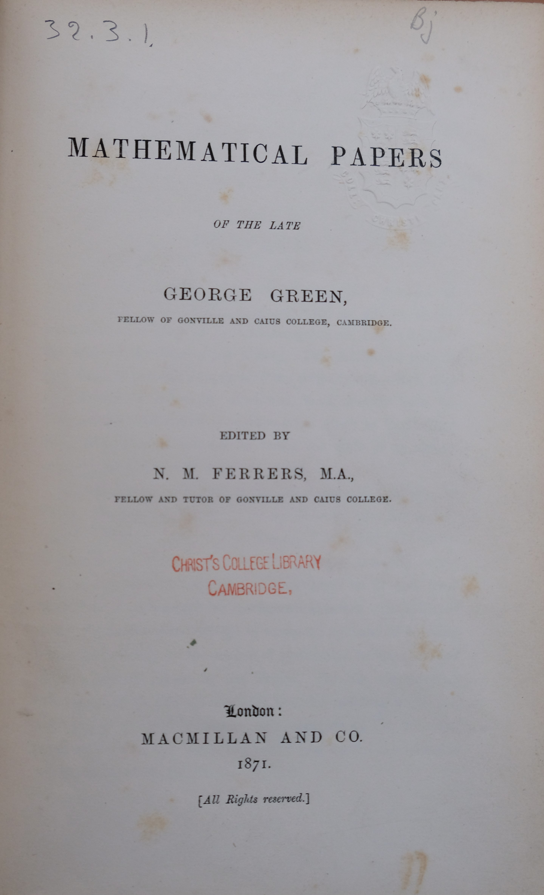

1793–1841
British
Mathematical physics, potential theory
George Green was born in Sneinton, Nottinghamshire, the son of a baker and miller. He had only one year of formal schooling, between the ages of eight and nine. Everything else — including the advanced mathematics of Laplace, Poisson, and Fourier — he taught himself, likely using the library of the Nottingham Subscription Library.
In 1828, at thirty-five, Green self-published an extraordinary essay: An Essay on the Application of Mathematical Analysis to the Theories of Electricity and Magnetism. It contained what we now call Green's theorem, Green's functions, and the foundations of potential theory. The essay was printed in a tiny run of about 100 copies, sold mainly to subscribers, and had almost no immediate impact.
Green entered Cambridge as a mature student in 1833, at age forty. He graduated fourth wrangler from Caius College in 1837 and was elected a fellow. He published several more papers on wave theory and optics, but his health was failing. He died in 1841, aged forty-seven, largely unknown. His work was rediscovered in 1845 by William Thomson (later Lord Kelvin), who tracked down copies of the 1828 essay, recognised its brilliance, and had it republished. Green's theorem and Green's functions became standard tools of mathematical physics — a remarkable legacy from a self-taught miller's son with one year of school.
| Phase | Page | Referenced for |
|---|---|---|
| Phase 7 | Green's Theorem | Discovered the circulation-curl relationship (1828) |
| Phase 7 | Green's Theorem | Self-taught baker's son; biography |
| Phase 7 | Green's Theorem | Area computation via Green's theorem |
| Phase 7 | Divergence and Stokes' Theorems | Green's theorem as the 2D case of Stokes' theorem |